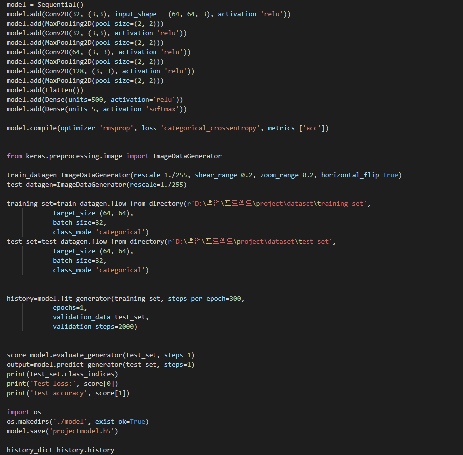

음표 인식 인공지능
음표 사진을 보고 어떤 음표인지 인식하는 프로그램입니다.
개발 동기
- 이미지를 인식하는 데 주로 사용되는 cnn을 배운 후에 교육 분야에 사용될 수 있는 방법에는 어떤 것이 있는지 고민하다가
음표를 인식해서 어떤 음인지 알려주는 인공지능이 있으면 교육을 더 쉽게 할 수 있을 것이라는 생각을 해서 개발하게 되었습니다.
상세설명
- 도부터 솔까지의 음표 사진을 입력값으로 전달해서 학습을 진행합니다.
- keras를 이용한 cnn 모델을 이용해서 학습을 진행한 후 모델을 저장합니다.
- 전달받은 모델에 전달된 입력값을 넣고 이를 바탕으로 인식을 진행합니다.

학습 부분 코드